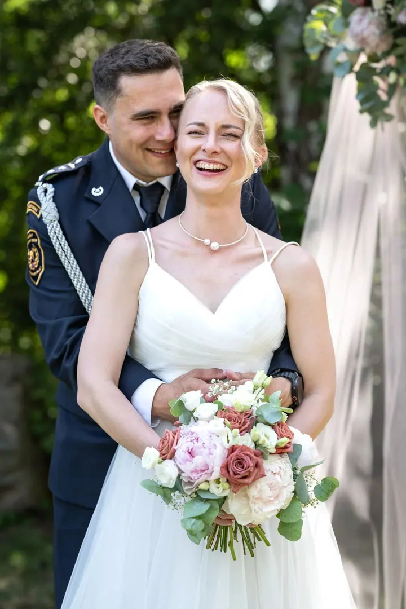
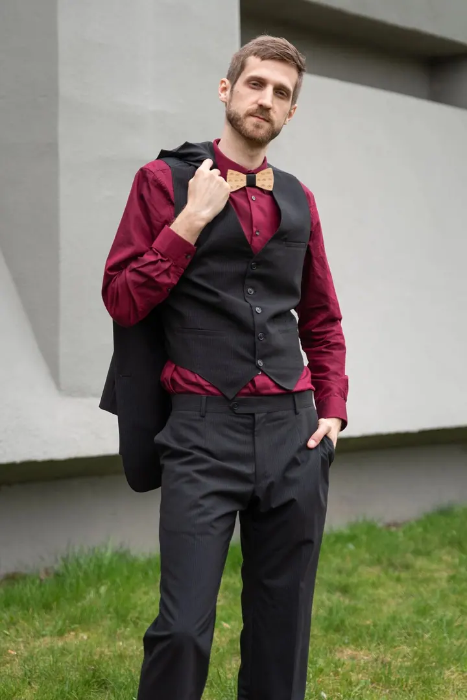
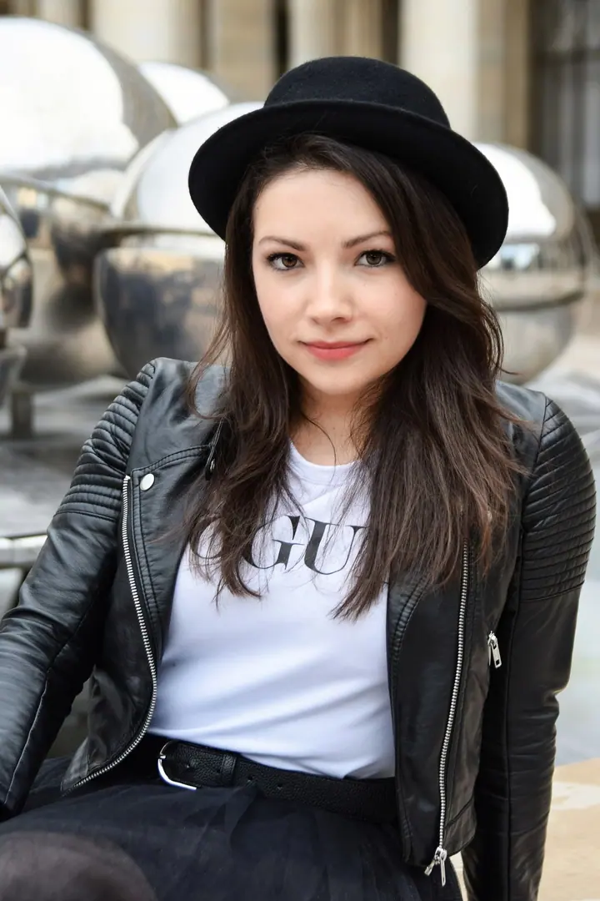
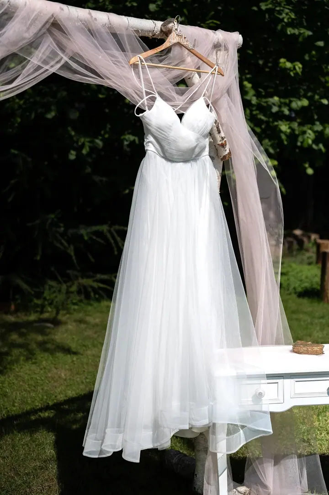
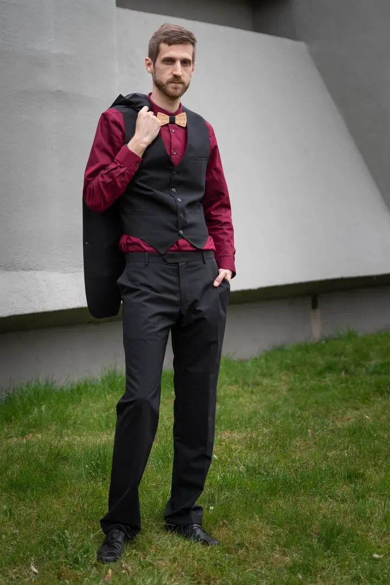

01 / 04
Svatební fotografie
Půldenní a celodenní svatby fotím v celé ČR. Kratší focení dělám převážně v Plzeňském, Středočeském a Karlovarském kraji a v Praze a blízkém okolí.
Zeptat se na termín→




Svatby a portréty z Plzně i Prahy
Zeptat se na termín →(01) Ahoj
Jmenuji se Miloš Kotek a jsem fotograf na volné noze z Plzně. Fotím svatby , portréty i oslavy a maturitní plesy , k tomu reality, interiéry a produkty. Od roku 2015 také učím fotit na kurzech v Praze, Plzni a Paříži.
(02) Co fotím
01 / 04
Půldenní a celodenní svatby fotím v celé ČR. Kratší focení dělám převážně v Plzeňském, Středočeském a Karlovarském kraji a v Praze a blízkém okolí.
Zeptat se na termín→02 / 04
Fotím ženské i mužské portréty a páry, venku v ulicích nebo u zajímavé architektury. Fotky jsou přirozené a mají čistý, ostrý výraz.
Zeptat se na termín→03 / 04
Fotím oslavy, firemní akce, soutěže, konference i maturitní plesy. Hlídám atmosféru večera i detaily, na které se pak rádi vracíte.
Zeptat se na termín→Dále nabízím
Kurzy večerní a noční fotografie, svítání v Praze, statickou fotografii a třídenní workshop v Paříži vedu od roku 2015. Na přání učím i individuálně, jednu osobu nebo soukromou skupinu.
↗(04) Postup
Od první zprávy po hotovou galerii.
Krok 1 z 4
Napište mi e-mail nebo zavolejte. Na e-maily odpovídám obvykle do jednoho pracovního dne.
Krok 2 z 4
Probereme termín, místo, rozsah focení a to, co od fotek čekáte.
Krok 3 z 4
Fotím v klidu a bez zbytečného aranžování, aby fotky působily přirozeně.
Krok 4 z 4
Fotky pečlivě vyberu a upravím a pak vám je předám v domluvené podobě.
Dobrá fotka začíná světlem a klidem.
(05) Za objektivem
Jsem fotograf na volné noze a fotím hodně různých věcí: svatby, portréty, páry, firemní akce a oslavy, ale také hotely, restaurace, produkty, krajinu a město. Každá z těch oblastí mě naučila něco, co pak využiju jinde.
Na svatby jezdím po celé republice, nejčastěji ale fotím v Plzeňském, Středočeském a Karlovarském kraji a v Praze. Rád pracuji v klidu a nenápadně, aby se lidé před foťákem cítili přirozeně.
Druhou velkou částí mé práce jsou fotokurzy. Už jedenáct let vedu kurzy večerní a noční fotografie, svítání v Praze, statické fotografie a workshopy v Paříži. Fotím ale i jinde: v New Yorku, na Lofotech nebo v Dolomitech.
Miloš
Miloš Kotek · Svatební a portrétní fotograf, lektor fotokurzů
Půldenní a celodenní svatby fotím v celé ČR. Kratší focení dělám převážně v Plzeňském, Středočeském a Karlovarském kraji a v Praze a blízkém okolí.
Ano. Fotím firemní akce a konference, interiéry hotelů a restaurací, reality i produktové fotky.
Ano. Kromě skupinových kurzů v Praze, Plzni a Paříži nabízím i individuální kurz pro 1–3 účastníky nebo soukromou skupinu.
Na e-maily obvykle do jednoho pracovního dne. Telefonicky jsem k zastižení mezi 9. a 18. hodinou.
(07) Kontakt
Napište pár vět o tom, co si představujete, a termín, který se vám hodí.